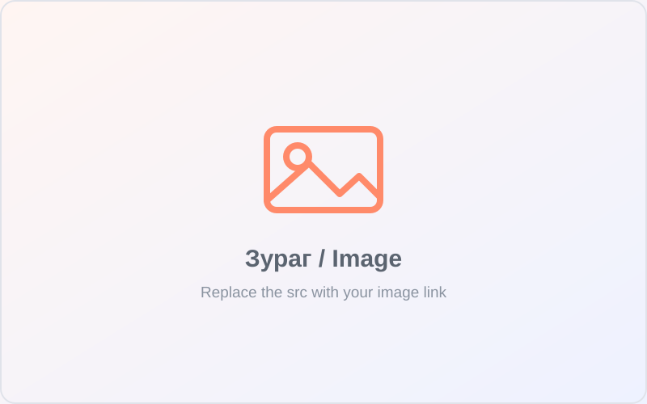

Rapid Trigger
The feature Wooting pioneered: keys reset and re-activate the instant you change direction, so repeated inputs fire with zero perceived delay.
Wooting's most complete keyboard yet. A low-latency 80% analog board with Rapid Trigger, true 8 kHz polling and per-key adjustable actuation — built to give competitive players an unfair edge.

Every figure below comes straight from Wooting's official spec sheet for the 80HE.
Hall-effect switches read exactly how far each key is pressed — the foundation for a whole toolbox of competitive features.
The feature Wooting pioneered: keys reset and re-activate the instant you change direction, so repeated inputs fire with zero perceived delay.
Tune the activation depth of every key in 0.1 mm steps, anywhere from a feather-light 0.1 mm to a deliberate 4.0 mm.
The 80HE scans every key 8000 times a second in perfect sync, reaching a stable ~0.125 ms input speed once Tachyon mode is enabled.
Map WASD to analog movement and feather the throttle in racing games or walk at exactly the speed you want in open-world titles.
Pick two opposing keys that never fire together — the deeper press wins — for crisp counter-strafing and clean directional inputs.
DKS, Mod-Tap, Toggle keys, full remapping and RGB — all configured in Wootility, in-app or right in your browser.
A silicone gasket mount, a polycarbonate switch plate and screw-in stabilisers work together to soften the typing experience and emphasise a deep, satisfying "thock".

See the full technical breakdown, browse the case styles, and read what players and reviewers think of the 80HE.